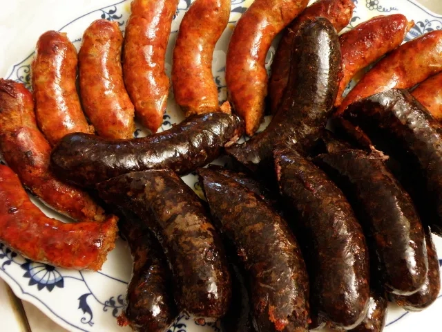

Májas Hurka
A májas hurka az egyik legtipikusabb disznótoros étel a házi kolbász és az abált szalonna mellett. Elkészítése 120 percet vesz igénybe, 4 adagot tudunk elkészíteni az alábbi alapanyagokból:

Hozzávalók:
Abálólé:
- 5 liter víz
- 2 fej vöröshagyma
- 2 fej fokhagyma
- 5 darab babérlevél
- 1 evőkanál egész feketebors
- 3 evőkanál só
Hurka:
- 33 dkg belsőség (vese, máj, szív, tüdő, nyelv)
- 33 dkg bőrkés háj, hús
- 8 dkg rizs
- 2,5 dl abálólé a rizs főzéshez
- 2,5 dkg morzsolt majoranna
- 0,5 dkg pirospaprika
- 0,4 dkg őrölt fehérbors
- 0,5 dkg só
- Töltött bél
Elkészítése:
- A zöldségeket az abálóléhez megmossuk és héjasan kettévágjuk, majd minden hozzávalójával együtt feltesszük főni.
- A belsőséget (vese, máj, szív, tüdő, nyelv) megtisztítjuk. A májat lehártyázzuk, és kivágjuk a főbb ereit. A veséből kivágjuk a húgyvezetékeket. A tüdőből kivágjuk a nagyobb légcsöveket. A szívet feldaraboljuk és kivesszük belőle az alvadt vért. A nyelvről levágjuk a légcső maradék részeit.
- A belsőségeket puhára főzzük.
- A bőrkés hájat, a tisztításból esetlegesen megmaradt szalonnát és a húsos részeket is megfőzzük az abalében.
- Ha minden megfőtt, a rizst négyszeres abálólében puhára, lucskosra főzzük.
- A főtt sertés részeket ledaráljuk, majd a rizzsel, fűszerekkel együtt összekeverjük. Ha kell, abáló levet adunk még hozzá, hogy ne legyen száraz.
- Hurkatöltőből bélbe töltjük, kis hurkákat formázunk belőle, majd gyöngyözően forró abáló lében megabáljuk őket. Mindezt kis szakaszokban, 1-2 perc alatt tesszük, míg a felületére fel nem úszik.
- 190 fokos sütőben 15 perc alatt megsütjük úgy, hogy egy kevés vizet alálocsolunk.